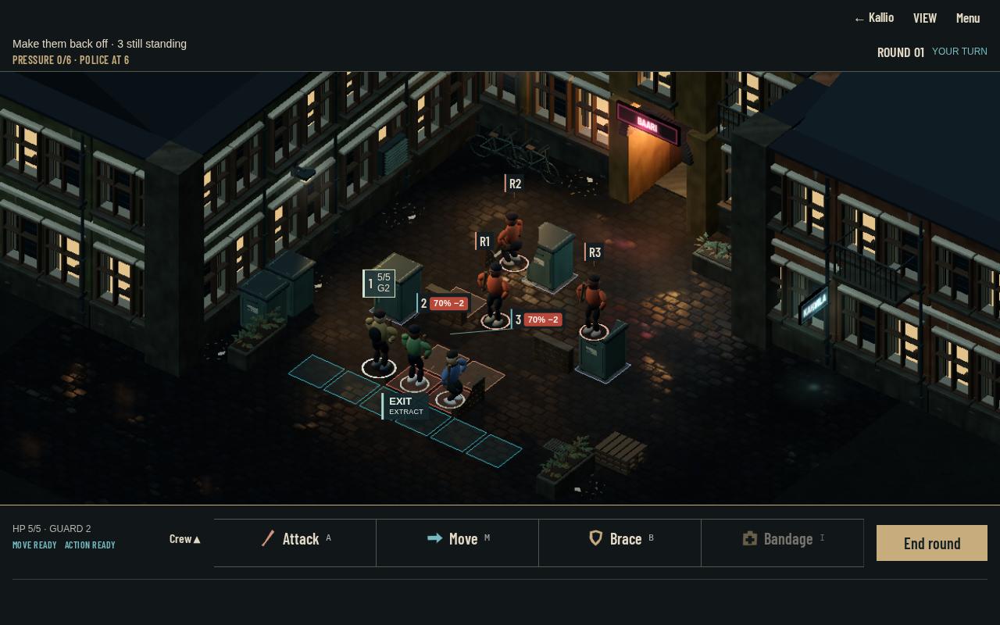

PIRITORI → EDEN · NIGHT SHIFT
Decisions in the fight
All 15 authored Act I fights, measured through C.19. Explore the evidence, then compare small readability proposals against the real 3D arena.
Act I remains 48%. This page changes no campaign, combat rules or art approval.
MEASURED · 7 NOVEMBER 2026
Fight evidence
| Policy | Won | Withdrew | Lost | Net HP lost | Rounds | Police |
|---|
Source and measurement limits
These are rounded summaries of deterministic bot runs, not player studies. Net HP loss and rounds are averages; outcomes and police arrivals are percentages. A higher win rate alone does not prove better player decisions. Downed/taken during the fight is not permanent campaign death; later recovery and crew deaths were not measured here. Wall-clock battle time and device performance were not measured.
Compare policies within the selected source, scenario and heat. Historical dodge-first and integrated v4.97 defensive are different opt-in experiments; neither is a promoted default. Multiple decisions change, so the defensive comparison does not isolate Brace as the cause. The source tool reports successful player commands where instrumentation exists; absence of telemetry is not zero.
Measuring tool · Historical evidence notes · Integrated v4.97 evidenceHISTORICAL v4.96 · ACTUAL C.19 CAPTURED FRAME
Readability proposals in its 3D place
The image below is the preserved v4.96 courtyard fight frame from 7 November, not a new v4.97 arena capture. Buttons add labelled proposal annotations only. They do not select a fighter, calculate a forecast or issue a combat command.

Phone frame at native size · Desktop frame at native size
Proposal overlay only. Existing stand-ins, 3D arena, camera, weapons, intention rules, police and campaign bridge remain authoritative. Emulated desktop-host frames do not certify physical Pixel/iPad readability or performance.
PLAY THE REAL BUILD
Three routes into C.19
These open the existing campaign playtest flow in a separate tab. That game keeps its set-aside/restore campaign controls; this evidence page itself writes no save.
NEXT IMPLEMENTATION SLICES · PROPOSED
Make the evidence actionable
- G1 · Inspect the measured tradeoffs. Completed evidence: constrained Brace-survival and target-free extraction fixtures, plus the corrected 30-seed measurement across all 15 scenarios with no stuck runs. Possible next diagnostics: a goal-aware getaway policy and a no-Brace ablation to isolate one mechanic from other policy changes. The roadmap's broader combat targets and owner acceptance remain open; no balance or default-policy change is promoted.
- Readability · One proposal at a time. Implement the target/destination preview first, through existing commands. Capture portrait/landscape, cancel/confirm and reload. Passing gate: exact forecasts/resources stay unchanged and important information fits.
- Arenas · Audit the current five sets. Render courtyard, yard, park, street and quay at the same eight camera angles before geometry edits. The October level-pass document is historical; ROADMAP records later fixes. Fix demonstrated joins/occlusion, never guessed defects.
- G2 · Make the return readable. Use the real receipt boundary to show money, crew, pressure and objective deltas. Keep withdrawal, police and victory distinct. Passing gate: reload never pays or injures twice.
- G0 / release · Physical acceptance. Record actual Pixel and iPad observations after source/CI checks. A browser screenshot or procedural stand-in is not final art or device approval.
Loading preserved evidence…